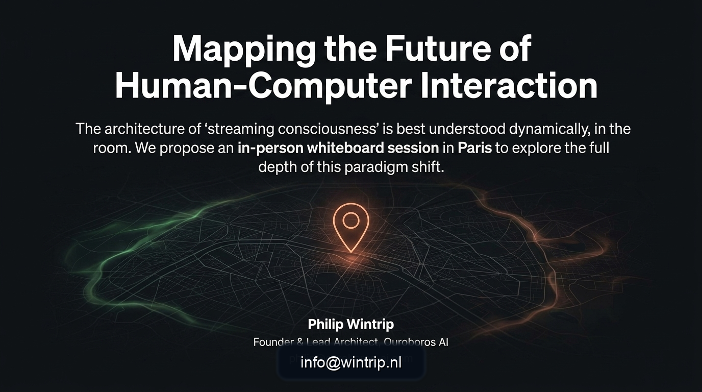

Exploration d'un pilote
Discuter de contextes concrets où une assistance ambiante et local-first peut protéger l'autonomie.
Contact
Qu'il s'agisse d'un pilote, d'un partenariat ou d'une session tableau blanc approfondie, cette page dirige chaque demande vers l'adresse de contact actuelle de Wintrip.

Sujets de contact
Discuter de contextes concrets où une assistance ambiante et local-first peut protéger l'autonomie.
Explorer comment une IA souveraine, des workflows device-native et une autonomie sûre peuvent s'aligner.
Programmer un échange précis autour de la conscience continue, de la mémoire et de l'architecture système.

Comment cadrer votre message
Action directe
En cliquant ci-dessous, votre client mail s'ouvre et adresse directement le message à la boîte Wintrip actuellement utilisée.
Rédiger un e-mail à info@wintrip.nl